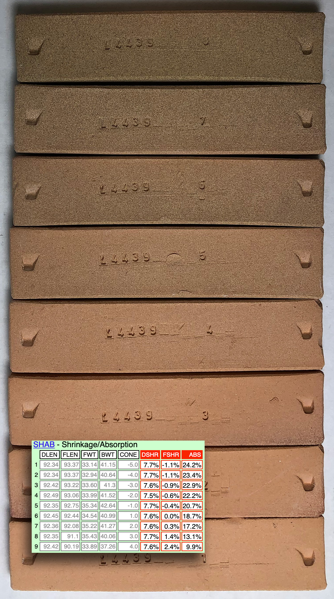
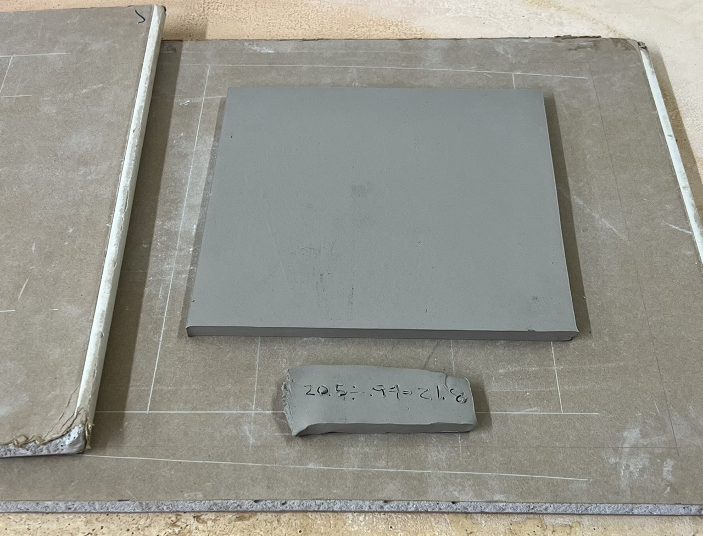

A Low Cost Tester of Glaze Melt Fluidity
A One-speed Lab or Studio Slurry Mixer
A Textbook Cone 6 Matte Glaze With Problems
Adjusting Glaze Expansion by Calculation to Solve Shivering
Alberta Slip, 20 Years of Substitution for Albany Slip
An Overview of Ceramic Stains
Are You in Control of Your Production Process?
Are Your Glazes Food Safe or are They Leachable?
Attack on Glass: Corrosion Attack Mechanisms
Ball Milling Glazes, Bodies, Engobes
Binders for Ceramic Bodies
Bringing Out the Big Guns in Craze Control: MgO (G1215U)
Can We Help You Fix a Specific Problem?
Ceramic Glazes Today
Ceramic Material Nomenclature
Ceramic Tile Clay Body Formulation
Changing Our View of Glazes
Chemistry vs. Matrix Blending to Create Glazes from Native Materials
Concentrate on One Good Glaze
Copper Red Glazes
Crazing and Bacteria: Is There a Hazard?
Crazing in Stoneware Glazes: Treating the Causes, Not the Symptoms
Creating a Non-Glaze Ceramic Slip or Engobe
Creating Your Own Budget Glaze
Crystal Glazes: Understanding the Process and Materials
Deflocculants: A Detailed Overview
Demonstrating Glaze Fit Issues to Students
Diagnosing a Casting Problem at a Sanitaryware Plant
Drying Ceramics Without Cracks
Duplicating Albany Slip
Duplicating AP Green Fireclay
Electric Hobby Kilns: What You Need to Know
Fighting the Glaze Dragon
Firing Clay Test Bars
Firing: What Happens to Ceramic Ware in a Firing Kiln
First You See It Then You Don't: Raku Glaze Stability
Fixing a glaze that does not stay in suspension
Formulating a body using clays native to your area
Formulating a Clear Glaze Compatible with Chrome-Tin Stains
Formulating a Porcelain
Formulating Ash and Native-Material Glazes
G1214M Cone 5-7 20x5 glossy transparent glaze
G1214W Cone 6 transparent glaze
G1214Z Cone 6 matte glaze
G1916M Cone 06-04 transparent glaze
Getting the Glaze Color You Want: Working With Stains
Glaze and Body Pigments and Stains in the Ceramic Tile Industry
Glaze Chemistry Basics - Formula, Analysis, Mole%, Unity
Glaze chemistry using a frit of approximate analysis
Glaze Recipes: Formulate and Make Your Own Instead
Glaze Types, Formulation and Application in the Tile Industry
Having Your Glaze Tested for Toxic Metal Release
High Gloss Glazes
Hire Us for a 3D Printing Project
How a Material Chemical Analysis is Done
How desktop INSIGHT Deals With Unity, LOI and Formula Weight
How to Find and Test Your Own Native Clays
I have always done it this way!
Inkjet Decoration of Ceramic Tiles
Is Your Fired Ware Safe?
Leaching Cone 6 Glaze Case Study
Limit Formulas and Target Formulas
Low Budget Testing of Ceramic Glazes
Make Your Own Ball Mill Stand
Making Glaze Testing Cones
Monoporosa or Single Fired Wall Tiles
Organic Matter in Clays: Detailed Overview
Outdoor Weather Resistant Ceramics
Painting Glazes Rather Than Dipping or Spraying
Particle Size Distribution of Ceramic Powders
Porcelain Tile, Vitrified Tile
Rationalizing Conflicting Opinions About Plasticity
Ravenscrag Slip is Born
Recylcing Scrap Clay
Reducing the Firing Temperature of a Glaze From Cone 10 to 6
Setting up a Clay Testing Program in Your Company or Studio
Simple Physical Testing of Clays
Single Fire Glazing
Soluble Salts in Minerals: Detailed Overview
Some Keys to Dealing With Firing Cracks
Stoneware Casting Body Recipes
Substituting Cornwall Stone
Super-Refined Terra Sigillata
The Chemistry, Physics and Manufacturing of Glaze Frits
The Effect of Glaze Fit on Fired Ware Strength
The Four Levels on Which to View Ceramic Glazes
The Majolica Earthenware Process
The Potter's Prayer
The Right Chemistry for a Cone 6 Magnesia Matte
The Trials of Being the Only Technical Person in the Club
The Whining Stops Here: A Realistic Look at Clay Bodies
Those Unlabelled Bags and Buckets
Tiles and Mosaics for Potters
Toxicity of Firebricks Used in Ovens
Trafficking in Glaze Recipes
Understanding Ceramic Materials
Understanding Ceramic Oxides
Understanding Glaze Slurry Properties
Understanding the Deflocculation Process in Slip Casting
Understanding the Terra Cotta Slip Casting Recipes In North America
Understanding Thermal Expansion in Ceramic Glazes
Unwanted Crystallization in a Cone 6 Glaze
Using Dextrin, Glycerine and CMC Gum together
Volcanic Ash
What Determines a Glaze's Firing Temperature?
What is a Mole, Checking Out the Mole
What is the Glaze Dragon?
Where do I start in understanding glazes?
Why Textbook Glazes Are So Difficult
Working with children
Monoporosa or Single Fired Wall Tiles
Description
A history, technical description of the process and body and glaze materials overview of the monoporosa single fire glazed wall tile process from the man who invented it. By Nilo Tozzi
Article
The word “monoporosa” is generally referring to glazed wall tiles which are single fired and it is used to distinguish the process from double firing. From a historic point of view, the term has been used from 1982, namely from the time we obtained the first glossy tiles with suitable characteristics for interior coverings (looking like tiles obtained by the traditional process of double firing).
History
Dr. Nilo Tozzi, during his cooperation with Mr A. Brusa of Sacmi Imola, prepared first frit for this technology which also required new bodies and new firing cycles. Perhaps the original idea was born in Spain, where a couple of companies started single firing of glazed wall tiles, but bodies contained chamotte, without carbonates so bodies show a shrinkage and glazes were made using normal frits. Only when Eng. A. Villa and A. Brusa of Sacmi recognized its development did the idea became an industrial process.
The first tiles obtained by a semi-industrial process (in the Sacmi pilot plant) were shown at 1982 CERSAIE in Bologna. Ceramica Faetano in San Marino Republic was the first factory to produce monoporosa tiles in 1983. To adapt the monoporosa process companies needed hydraulic presses (instead of impact presses that had been used for wall tiles) and roller kilns needed more burners in the preheating zone.
However, monoporosa quickly became more popular in Spain than Italy because their clays had a low content of organic matter and higher levels of quartz. Spanish glaze suppliers quickly proposed new frits for monoporosa, early formulations grew from the simple observation that matt glazes never showed defects when used for monoporosa and that a mix of similar percentages of a standard calcium matt glaze with a zinc matt glaze produced an almost glossy glaze. This phenomenon occurred because the rapid cooling in the process prevents re-crystallization and the concentration of crystallizing elements is not sufficient to seed and develop them. The rapid growth of the monoporosa process in Spain created a demand that enabled glaze suppliers to enhance the quality of frits.
Ceramic body composition
Body compositions for monoporosa red or white contain a significant amount of calcium carbonate or dolomite which, during firing, produce porous bodies with almost zero shrinkage. Generally the content of carbonates is in the range 8 – 15% and they can be sourced from clays naturally containing carbonates, from rocks containing carbonates or by natural carbonates.
The role of carbonates in the body is thus twofold: The development of new crystalline phases during firing that boost mechanical strength and the production of a fired product with almost zero shrinkage.
Besides the carbonates the body is composed of:
- clays to impart a suitable mechanical strength to the green tiles
- quartz or sandy materials to obtain a proper thermal expansion
- inert materials to avoid black core (in case the organic matter in the clays is excessive).
Carbon Dioxide Evolution From Carbonates
In the monoporosa system, carbon dioxide release occurs at temperatures lower than normal decomposition temperatures of natural carbonates of calcium and magnesium. For example, calcium carbonate decomposes at about 880C when alone but when mixed into a ceramic body its decomposition starts at about 700C (after which the calcium oxide quickly reacts with the clays). The reaction accelerates as the temperature rises and free calcium oxide disappears in the range 900–1000C. The reaction between the calcium and the products of clay decomposition (like silica and amorphous metakaolin, a product of dehydroxylation of kaolinite) produces crystal phases like wollastonite (CaSiO3), anorthite (CaAl2Si2O8) and gehlenite (Ca2Al2SiO7). From x-ray diffraction patterns at different temperatures we observe that the calcium-based gehlenite is the most important new phase until about 950C, after which it slowly disappears giving way to anorthite.
Dolomite exhibits reactions similar to calcium oxide however the starting temperature of carbon dioxide evolution is around 650C. Magnesium oxide also reacts with metakaolin giving diopside (MgCaSi2O6) and forsterite (Mg2SiO4) but a large amount remains as oxide periclase (MgO) even at high temperature (it is evident in post-fired products using x-ray diffraction). Crystal phases resulting from reactions of calcium and magnesium oxides have needle shapes so that they form a skeleton network that imparts mechanical strength to the ceramic body and prevents shrinkage during firing.
From a practical and technical point of view the behaviours of calcite and dolomite in the monoporosa process are similar (substituting one for the other produces similar mechanical strengths and porosities). Considering that magnesium has lower atomic weight than calcium we could speculate that with dolomite we would obtain a larger amount of new formation phases. However this hypothesis fails in practice because part of the magnesium remains in the oxide form in the body after firing. The key difference is often just the cost because in several countries dolomite is cheaper than calcite.
Post-expansion
Post-expansion issues sometimes present a problem, tiles can expand after several months (which of course causes glazes to craze). For a dolomite magnesium oxide process, periclase could be implicated as the cause, however we must consider that this oxide is very stable (we can find it in natural sediments that span geological eras). An alternate hypothesis seems more plausible: Post-expansion results from a poor structural arrangement of new crystal phases, these are prone to re-hydroxylation in humid environments. Post-expansion has also been observed for double fired tiles where both firing cycles are fast, but it is rare where the body is subjected to a mult-hour cycle.
Thermal expansion
Thermal expansion is an important body characteristic to understand and control. A good planarity after firing is only possible where there is a good fit between the thermal expansions of body and glaze. While some firing adjustments are possible (temperature gradient, bottom rollers) the physical thermal expansion match between body and glaze is the most important variable.
Glossy glazes for monoporosa contain high percentages of frit (having high calcium and zinc oxide contents) so they exhibit a low thermal expansion (during cooling in the kiln a lower expansion body shrinks more than glazes and tiles tend toward convex). Usually monoporosa tiles with glossy glazes show some degree of convexity after firing but the extension of this defect quickly decreases during storage of tiles (because a post expansion occurs caused by atmospheric moisture). The speed of convexity decrease depends on body composition and it can vary from some hours to some days. The process can be enhanced by dipping the tiles in water. Thus we adjust percentages of quartz and sandy clays in order to have a suitable thermal expansion to ensure a good planarity several hours or days after firing. Usually the limit value for thermal expansion is around 65·10-7 cm-1. Of course, considerable technical effort can be required to achieve tiles with the correct degree of convexivity so that the final equilibrium state is flat and uncrazed.
Pressing
Shaping by press is a relatively simple task and no compensatory measures to adjust for size are needed because the body does not shrink. However, we have to control the apparent specific weight and it must be less than 2.1-2.2 gr/cm3 for the entire area of tiles in order to avoid degassing problems. If the density is too high gases cannot escape at release temperatures and we have blisters on the surface of glaze.
Engobes
Frit content is in the range 20-40%, depending on maximum firing temperature, while other components are typical of glazes: clays, feldspars, nepheline, kaolin, micronized zircon, alumina and quartz. The content of plastic materials must be suitable to ensure a homogeneous drying of glaze.
Sometimes it is necessary to consider thermal expansion of the engobe in order to avoid excess concavity of tiles after firing. In such cases a strong addition of quartz can help to reduce the problem (because the mineral exhibits a large volume reduction during cooling and reduces the thermal shrinkage of the engobe). It is also possible to employ a frit having a high thermal expansion.
It is often necessary to use an engobe as both a water and light barrier. Large percentages of micronized zircon (usually more than 20%) can be needed to obtain a sufficiently opaque and white engobe. At the same time we have to regulate fusibility of the engobe in order to have a complete sintering so water can’t pass through.
Glazes
Monoporosa frits for glossy surfaces have unique characteristics because they sinter and melt both within a narrow range and at a higher temperature than typical frits (because they have a high content of calcium and zinc oxides). During firing there is an evolution of carbon dioxide from the body that can continue until 950C. This maximum temperature depends on heating gradient and thickness of ceramic body (because an adequate temperature for carbon dioxide elimination must be reached right to the core). Thus glossy glazes must remain highly porous and permeable even above 1000C to allow gas evolution from body and avoid pinholes or blisters. Since matt glazes always exhibit this kind of behaviour anyway, we never detect defects on surfaces.
Because we maintain calcium and zinc oxides levels at around 10% in glossy frits (opaque or transparent) they crystallize during heating and these new crystals (wollastonite and willemite) keep glazes in the solid state delaying the sintering process so gases can pass through. When the temperature is high enough, usually for normal monoporosa glazes above 1050 C, we observe the formation of a liquid glassy phase which subsequently takes the crystals into solution to form a mature glassy glaze. In roller kilns the cooling gradient is very quick and tiles pass from temperatures around 1100C to around 600C within a few minutes, so we cannot observe any new crystallization of calcium and zinc compounds to marr the glossy surface (this rapid transition denies the conditions necessary to form the crystals that would otherwise grow). In this way we also obtain frits maturing in the range of firing of monoporosa bodies (the so called “high temperature frits” that are suitable even for higher temperatures and floor bodies).
Usually monoporosa frits contain low percentages sodium, potassium and boron oxides because they actively generate a glassy phase during heating (which is obviously dangerous for the above reasons). Usually boron oxide is in the range 0-3% (in addition, it quickly reduces viscosity of the melt during soaking and this could generate pinholes on the surface). Glossy glazes are made using high percentages of frits (90-95%) plus kaolin, clays and micronized zircon. Both engobes and glazes contain about 0.2-0.3% of sodium CMC and 0.1-0.2% of STPP: Usually glazing is by bell or suitable devices to obtain the smooth laydown needed for wall tiles.
Firing
Compared to normal firing cycles for floor tiles, monoporosa firing cycles show a longer preheating. This is a direct consequence of the reactions of carbonates present in bodies (the kinetic of reactions corresponding to carbon dioxide elimination is quick only in the range 800-950C). Practically all tiles are quickly heated to the range 800-1000C for enough time to guarantee organic matter combustion, if present, and carbon dioxide evolution from carbonates. For this reason the kiln must have sufficient burner capacity in the preheating zone. Once carbon dioxide is expelled tiles are quickly heated to the soaking temperature of the glaze (by design that is also the same temperature that guarantees a good mechanical strength for ceramic body). Soaking time is normally less than 5 minutes, which is enough time to completely melt the glaze but not enough to allow bubbles to grow.
There have been recent developments in glazes for monoporosa: they are porous and solid until above 1100. For them preheating can be shorter and soaking temperature is set near half sphere temperature.
Wall Tiles: Double Fast Firing or Monoporosa?
Right now both processes cohabit for the production of wall tiles, each one with its negative and positive aspects. Monoporosa requires a covered plant area that is smaller than double firing and a smaller investment with a direct production cost that is also lower for similar products. On the other hand monoporosa shows a lower quality in cases where raw materials for the body are not perfectly suitable or where there is not a tight control of the process.
During the last decade the monoporosa process became more popular because companies producing porcelain tiles for floor can also produce monoporosa wall tiles by simply adding calcite or dolomite to the ceramic body (the one they use for floor tiles). Using this method we wet-mill a mixture of calcite or dolomite with a small amount of clay or kaolin and afterward mix the carbonate slurry with the floor tile body composition slurry (in the required proportions). This can be done easily using mass-flow meters. Once the mixture is spray-dried we have the powder for press. This method enables us to obtain body powders for floor and wall tiles by just preparing one basic composition and using the same equipment with the addition of a single discontinuous mill.
This comment was later made by Mr. Tozzi: I don't have cost comparison data with me (from Italian companies). For what I remiember energy savings for monoporosa are about 25% in terms of specific consumptions of natural gas and electrical power. Usually total manufacturing cost is about 15% lower for monoporosa but this value depends on local cost of energy. As noted, double firing needs a bigger investment, a bigger covered area and more manpower. In general the quality of glossy tiles is better for double firing.
Related Information
How to make a zero fired shrinkage clay

This picture has its own page with more detail, click here to see it.
This is Plainsman BGP, a terra cotta, mixed with 30% dolomite. Note the "DSHR" column in the SHAB test data (third last column): The drying shrinkage still averages over 7% even with the 30% dolomite, so BGP is very plastic. Notice the "FSHR" (fired shrinkage) column, it is negative for the first five test bars fired at cone 05-01, which means the bars grew in size! But notice the shrinkage hits 0% at cone 1 (bar #6). By cone 2 the trend has reversed to 0.3% shrinkage. The #6 bar is appears to be vitrifying, the color is darkening and it is strong. But notice the last "ABS" column (water absorption), it is 18.7%! This body was intended as a high-porosity ceramic at the lower ranges (it has 25% porosity at cone 05), but the dolomite is also slowing the densification as it goes through the vitrification process. Without the dolomite the top bar would be melting! By cone 1 its firing shrinkage would be 7%, and the porosity would be zero. Is this technique practical? Yup! The entire monoporosa wall tile industry is based on it!
A plastic pottery clay for rolling ceramic tile:
Not a crazy idea when it can do what this can!

This picture has its own page with more detail, click here to see it.
This is the dolomite body recipe L4410P (a development version of Plainsman Snow). It is monoporosa tile on steroids; this body has zero percent firing shrinkage at cone 04! Predicting the final size and keeping that size consistent is much easier with such bodies. I have measured its drying shrinkage as 6% (doing our standard SHAB test). The final size needed is 20.5 cm square. Thus, I calculate the cut size to be 20.5 / (100 - 0.06) = 21.8 cm (or 20.5 / 0.94 = 21.8 cm). To keep these flat, we put them between sheets of drywall; the process takes 2-3 days. Since no change in size occurs during firing, this body has another big advantage: Tiles stay flatter during firing (a major problem with tile production). While making wall tile using a plastic pottery body is not something for industry (especially because of the space requirements for drying), for artisans working on a small scale, a body made by mixing super plastic ball clay with dolomite produces amazing working and tactile properties. The bonus is that they work so well at low temperatures, where there are so many glazing options.
Links
| Glossary |
Dust Pressing
Many ceramic products, especially tile, are formed by pressing high-moisture or binder-containing dust or pelletized dust into steel molds at high pressures. |
| Glossary |
Monocottura
|
| Glossary |
Terra Cotta
A type of red firing pottery. Terra cotta clay is available almost everywhere, it is fired at low temperatures. But quality is deceptively difficult to achieve. |
| Glossary |
Engobe
Engobes are high-clay slurries that are applied to leather hard or dry ceramics. They fire opaque and are used for functional or decorative purposes. They are formulated to match the firing shrinkage and thermal expansion of the body. |
| Articles |
Glaze Types, Formulation and Application in the Tile Industry
An technical overview of various glaze type used in the tile industry along with consideration of the materials, processes and firing. |
 PayPal | No tracking, No ads, No paywall, No transient content! Just organized, concise information constantly updated and improved. Was this helpful? Consider supporting me. |
By Nilo Tozzi
Got a Question?
Buy me a coffee and we can talk 

https://digitalfire.com, All Rights Reserved
Privacy Policy